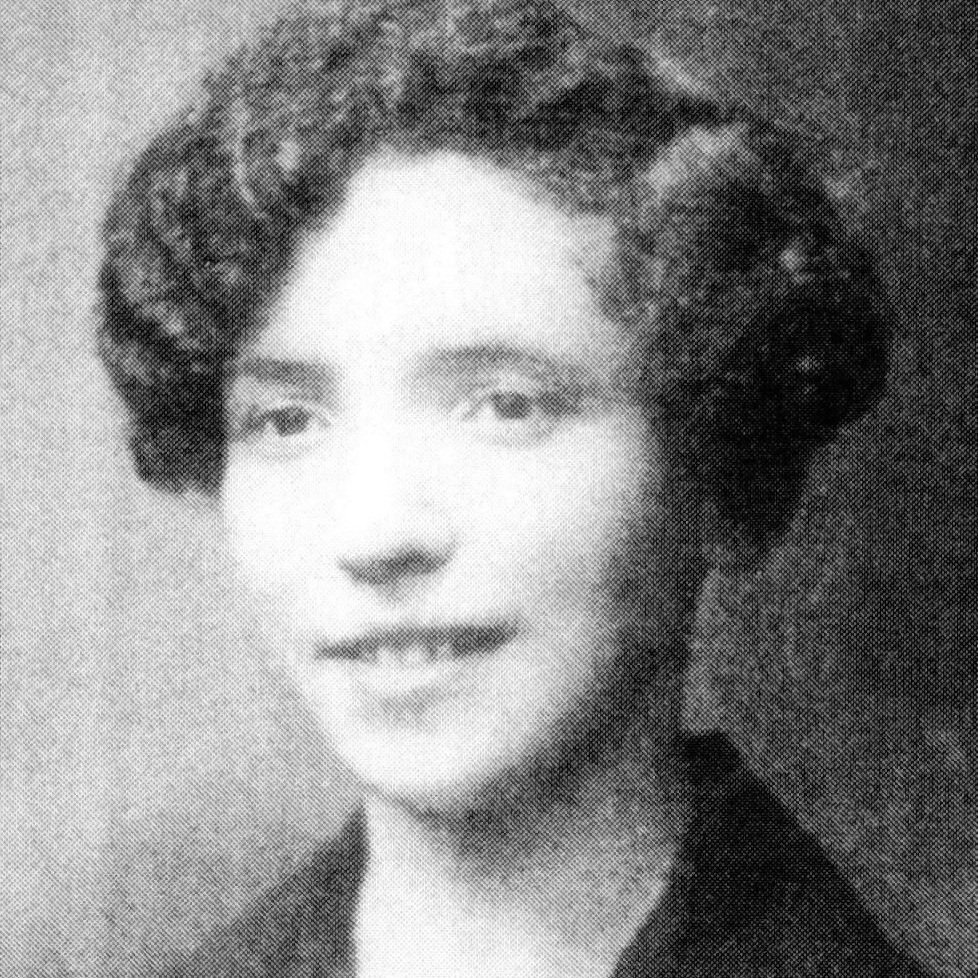

Portrait d’archive
Perla Zandt
Perla Zandt
Perla Zandt est née le 18 mars 1913 à Varsovie (Pologne). Elle est la fille de Jacob Salomon Zandt et de Suzanne Sheba née Gasiorowska (Gosherowski) et la soeur de Moshe (Morris) et de Sarah..
Elle habitait 6 rue Francis de Pressensé à Saint-Fons (69190) puis au 81 rue Rabelais à Lyon (69003).
Perla Zandt, corsetière-couturière, est venue en France en 1936 où elle a demeurée à Paris pendant 2 années puis à Lyon de janvier 1938 à mai 1939. Son père étant décédé à Varsovie , elle rentre en Pologne. Elle revient en France le 31 juillet 1939 et réside à Nice et à Marseille jusqu’en octobre 1940. Arrêtée comme juive en 1941, elle est internée au camp d’Argelès s/Mer puis à celui de Rivesaltes. Elle y accoucha de son fils Wladimir (fils de Vladimir ?) le 30/12/1940 à la maternité d'Elne, dépendant du camp de Rivesaltes. Ils seront libérés ou s’en évaderont en janvier 1942. Ils résideront à Aix-les-Bains jusqu’au 31/07/1943 pour se rendre à Chambéry où Perla trouve un emploi de bonne. Wladimir, âgé de 3 ans, est placé en nourrice par l’O.S.E. (Œuvre juive de Secours aux Enfants) dans la famille d’un gendarme résistant à Aix-le Bains. Perla se rend à Lyon, le 26/08/1943 muni d’un sauf-conduit (valable du 26/08 au 09/09/1943) et habite au 6, rue Francis de Pressensé à Saint-Fons (69190) puis au 81, rue Rabelais à Lyon (69003). Le 27/08/1943, elle fera une demande d’autorisation de séjour dans le Rhône qui lui sera refusée le 18/11/1943 avec obligation de quitter le département avant le 10/12/1943. Elle trouve un emploi de femme de ménage à la Grande synagogue Tilsitt de Lyon (13 quai Tilsitt, 69002) où elle est arrêtée lors de la rafle du 13/06/1944, menée par Paul Touvier, chef de la Milice lyonnaise. Elle est transférée à Drancy le 04/07/1944 puis déportée à Auschwitz par le convoi 77 du 31/07/1944. Elle est morte en déportation à l’âge de 31 ans.
En 1946, son fils Wladimir est mis sous tutelle puis adopté par la famille Bobichon à Neyron sous le nom de Guy Bobichon, sans en informer son oncle maternel, Morris Sand, habitant les USA. Il n’apprendra qu’à l’age de 13 ans qu’il a été adopté et deux an plus tard qu’il est né juif. En 1998, il remplira une fiche de témoignage YVS concernant sa mère Perla. Par le décret du 22 juin 2009, il est autorisé à reprendre son nom, Wladimir Zandt.
Le 13/06/1944, elle est raflée à la synagogue Tilsitt avec : Claude Heyman (06/06/1926), Emile Cahen (19/03/1876, Mulhouse), responsable du bureau de l’Aide Sociale Israélite de Lyon, Isaac Maurice Eisner (14/04/1894, Łódź, Pologne) et sa femme Fajga Eisner née Marmersztajn (19/11/1898, Przedbórz, Łódź, Pologne).
“A Lyon. M. Eugene Weill témoigne […]: La milice a fait irruption a la synagogue quai Tilsit Ie 14 juin 1944 vers Ia fin de l’après-midi. Les miliciens arrêtèrent Ie secrétaire du Consistoire Emile Cahen, Ie premier ministre officiant Benjamin Dreyfus, son neveu, M. Heymann, Ie concierge, M. Eisner, sa femme et la femme de ménage [Perla Zandt]. Tous ont été déportés.” (Source: La persécution raciale, 1947, Service d’information des crimes de guerre, Office français d'Edition).
Déportée à 31 ans à Auschwitz.
Convoi 77 du 31/07/1944.